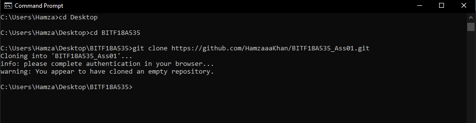

Version control system is basically used when diffrent people workig on the same repository and they want to make there work visible to there team and update the repository regularly by adding there work. It is also useful to secure the code.
This is how you clone repository with cmd.
Version control system hve some pretty basic commands to update our repository.
This command give us the information about the files present in local drive but not in github repository.
Here we have modified our index.html file but not pushed in githhub repository hence we have been warned.

This command will uppdate our repository with Filename file. This command come with 2 options either we can save our current file or we can upload our whole folder containing all file in our local drive For example git add file or git add.


Here you write your message or changes you made in the file

It give us information about the branches.

We can also generate Branches hence we can do prallel work in our repository.

The * sign represnt the branch we are currently in if we want to move to another branch we use this command.

By this command we merge the two files in one and we have the option to keep the changess or discard or keep the both files in one.